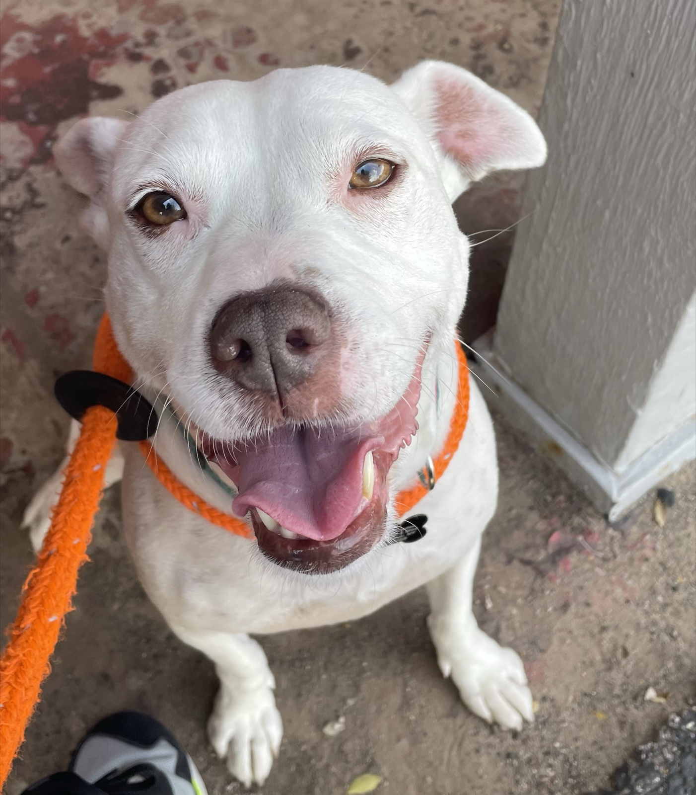

A flagship sanctuary for the Triangle's senior dogs — and the retirement phase every one of them deserves.

In 2020, I was on my third attempt to adopt a dog being transported from Mississippi. Three times the transport failed — the shelter didn't have the transportation, the volunteer hours, the foundation to make it happen. That was my first look at the weak bones of the shelter system.
The agency pivoted. There was a "Momma Bailey" — seven or eight years old, being surrendered because her owner was elderly and financially stressed. I drove six hours from New York City to Rhode Island to pick her up. On the way home, I was told she was also deaf. I refused to believe it until we got home and confirmed it.
From there, the greatest thing that has ever happened to me, happened. I had a dog. The perfect dog. Her deafness became our connection point — we invented our own sign language. We walked Brooklyn for miles, exploring neighborhoods I would never have seen on my own. She lived with me through career changes, breakups, personal growth. She always showed up for me as I was.
I had been against adopting a senior dog. You're signing up for a shorter term than most adoptions. But Bailey passed at fifteen. Six years — six of the greatest years. She died happy. She was supposed to die earlier. She got the retirement phase she deserved.
Bailey's World is so other senior dogs can get that too.
— Wally Mostafa, founder & executive director
You CAN teach an old dog new tricks. You sure can.
North Carolina's animal-welfare infrastructure has reached an inflection point. Senior dogs are the least flexible inventory in a system running above capacity — stayed longer, cost more medically, adopted out at less than half the rate of younger animals. They are the ones the system defers.
Shelter euthanasia rate — up from a 22% low in 2021.
NCDA&CS · WRAL Investigates Nov 2025Dogs euthanized — roughly 35% of dog intake.
APS Durham Fast Facts Sheet 2025First state fine. The Animal Center was cited for violations tied to a dog's euthanasia.
WRAL · Nov 2025Senior-dog-specific sanctuaries operating a facility in the Triangle's four counties.
Independent market review · Apr 2026The open-admission shelters can't prioritize senior dogs' long-term care. Not from lack of will — from lack of capacity, time, and infrastructure.
of America's 89.7M dogs are 8+ years old — ~25–30M senior dogs, a threefold increase since the 1990s.
Pet palliative care market by 2033 — growing from $1.36B in 2024. CAGR 8.2%.
| Triangle Market | Today |
|---|---|
| 4-county population | ~1.81M |
| Dog-owning households | ~304,000 |
| Senior dogs in the Triangle | ~122,000 |
| Senior-dog at-shelter-risk (SAM) | 1,700–2,200 / yr |
| Bailey's World target (SOM) | 120–220 / yr |
| Triangle Community Foundation AUM | $240M+ |
| US animal-welfare giving (2024) | $11.83B (+7.2%) |
Sources: US Census ACS, AVMA 2024 Pet Ownership, Grand View Research, Giving USA 2025, Triangle Community Foundation At-a-Glance.
On-site space is the most expensive capacity to build and operate. Reserve it for decompression, medical stabilization, and hospice — the seniors least suited to foster. Let a distributed foster network do the volume work, and build community, adopter pipeline, and donor engagement in the same motion.
The goal is not cheap acreage. It's a parcel with a clean regulatory path, a believable conversion story, and drive-time to donor density. Chatham carries the best land economics if a pre-UDO close is still possible; Orange carries the safest execution path with existing precedent at Paws4Ever and OCAS.
Every CapEx dollar is tied to a gated milestone. 12 months of operating reserve is baked into the phase-one raise, not raised later. Social-enterprise revenue (boarding in Phase II, clinic in Phase III) phases in only after the core sanctuary stabilizes.
| Line · USD thousands | Year 1 | Year 2 | Year 3 | Year 4 | Year 5 |
|---|
Mid scenario tracks base case. Operating surplus starts Year 1; Phase II (boarding) launches end of Year 2; Phase III (clinic) launches Year 4. Annual surpluses seed the $3M endowment target by Year 7.
Naming Rights Ladder
Three tranches. Five gate-checks between them. No capital commits before its gate is green. Investors back the experience first, without forcing premature land risk.
501(c)(3) formation. Fiscal-sponsor bridge. Founder runway. Land-use attorney review. Septic + structural diligence on top candidates.
Parcel closed under clean title. SUP / CUP filed and locked in. Architectural design. First 10 fosters committed. Early hires.
Barn conversion (12–24 mo). Medical fit-out. Team completion. Social-media engine live. First cohort of seniors on-site. 12-month operating runway funded.
Founder & Executive Director
UX leader turned AI builder. Scaled Kinesso/IPG's design team from two to thirty. Currently building AI tools at Hedgehox and a solo AI consultancy (One Block Away LLC). Multi-award-winning designer — Indigo 2022 & 2023, Red Dot 2021.
Bailey's adopter from 2020 until her passing at 15. Relocated to the Raleigh Metro and available full-time for the operating role. Accepting below-market comp for the first three years as in-kind founder contribution.
On-site residency (Years 1–3). Founder will reside on-site at the sanctuary during Phase I — providing emergency response, continuous presence for hospice dogs, and around-the-clock institutional knowledge during the operational shakeout. A dedicated founder's cottage is deferred to Phase II.
I saw the system's weak foundation the first time a transport from Mississippi failed, three times in a row. I had Bailey instead. This is so other senior dogs can have what she had.
Year-One Hiring Roadmap
Plus NC State College of Veterinary Medicine externship partnership (#3 ranked nationally), target board of 5–7 directors, advisory board with Dr. Maria Correa (CVM), Triangle Community Foundation philanthropy leadership, Grey Muzzle board alum, pet-palliative specialist, and estate-planning counsel.
A three-panel barn. West wing holds private suites — the bedrooms — where dogs sleep, recover, and get medical monitoring. The glass center is the daytime living room. East wing is medical + community ops. Drag it to see it from every angle.
A dead agricultural structure gets a second act — the same chapter as the dogs it houses.
Indoor-only suites waive the 150-ft kennel setback in Orange County and strengthen the position in Durham and Chatham.
Seniors shown in their best-case self — in a living room, not behind chain link — convert at rates kennels can't match.
A visible, visitable senior-dog sanctuary is the fastest way to turn concept into regional infrastructure.
Phase-one capitalization target: $1.25M – $3.05M. Lead-gift sweet spot: $240K – $750K (18–25% of goal). Founders' Circle positions: 12 at $100K+.
Twenty-four months after close: land secured, conversion complete, first seniors on-site, social-media flywheel live, expansion case ready.
This is so other senior dogs can get what Bailey got.